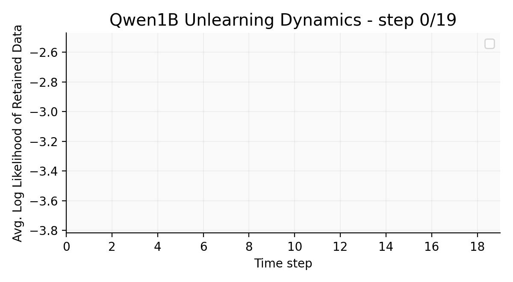

On the Impossibility of Retrain Equivalence
in
Machine Unlearning
Introduction
Large language models (LLMs) inevitable acquire sensitive information during training—such as data that exposes personal privacy, subject to commercial license, or violates legal compliance. It’s required that LLMs learn to withhold such sensitive information before they can be deployed at scale. This is the research field called machine unlearning.
Our work investigates the family of scalable unlearning algorithms (i.e. those efficient enough to be deployed on billion-tokens models) and illustrate how they can’t guarantee forgetting: an unlearned model cannot interact with users as if it has never seen the sensitive data, as long as we don’t know how the model acquired such private inforamtion from the first place. This is because unlearning is path-dependent by nature: the order of which a model receives new information impacts how it forgets. If an unlearning algorithm does not take this into account, it’s shooting in the dark.
Desiderata
Consider a model \( \theta \) trained on dataset \( D = D_f \cup D_R\), which can be partitioned into a forget set \( D_f \) and a retain set \( D_r \). The goal of an unlearning algorithm $\mathcal{U}$ is to remove the influence of the forget set from the model's predictions. The following desiderata drives research in unlearning.
Retrain Equivalence

Local Unlearning
Why is Retrain Equivalence Impossible?
Today's LLMs are trained in distinct stages, such as instruction tuning, alignment tuning, RL, reasoning, etc. This is the source of unlearning impossibility: as long as we don't know how these training stages are ordered, local unlearning algorithms are doomed to fail.
We argue impossibility by showing that unlearning is path-dependent. The relative order between training stages impacts what is unlearned and how fast unlearning occurs.
If we feed two models trained on the same datasets but in different orders to the same unlearning algorithm, the resulting models will diverge in a path-dependent way; therefore they can not both behave "as if they have never seen the forget set".
Our results suggest (1) since most unlearning algorithms do not have access to the order of training stages, they can not guarantee retrain equivalence; (2) it is unfair to compare unlearning algorithms without taking learning paths into account, since different algorithms react to paths in different ways. This elludes to a fundamental difficulty in developing and evaluating unlearning algorithms.
Example: Unlearning dynamics of Qwen models

Experiment: LLM Post-Training Pipeline
We empirically demonstrate history-dependent nature of local unlearning algorithms through a four-stage finetuning pipeline that simulates today's LLM post-training workflow. The same base model is finetuned on identical datasets but in different orders, then the resulting finetuned models undergo a same unlearning procedure. We observe that the unlearning outcomes diverge in a path-dependent manner: the speed of forgetting and the spill-over effect on other capabilities are history-dependent.
Training stages
-
Sinst — Instruction TuningINSTRUCT-SKILLMIX • 4k pairs • 10 epochs
-
Stofu — Fictitious KnowledgeTOFU • 4k Q-A • 4 epochs
-
Smath — Math ReasoningGSM8K rewrites • 8k items • 2 epochs
-
SU — Safety/Refusal (Unlearn set)SORRY-BENCH rewrites • 4.5k • 2 epochs
Takeaways
-
Different unlearning algorithms all exhibit path-dependenceWe experimented with three local unlearning algorithms: gradient ascent, Negative Preference Optimization, and SimNPO. We observe that all considered algorithms exhibit path-dependence, even with the precense of reference-based regularization terms.
-
Recency Effect: Unlearning is hardest when the information is freshWhen there is no intermediate retained data between the learning and unlearning of the forget set, we find that it's consistently slower to decrease the log likelihood of the forget set targets. This is often accompanied by a smaller spill-over effect on held-out capabilities. The mechanism of this recency effect is worth further investigation, especially for the RL community.
-
Shallow vs. Deep ForgettingExisting work shows unlearning can be either shallow (only a single phrasing of an undesired response is repressed, but paraphrases remain likely) or deep (paraphrases/semantically equivalent responses all reduce in likelihood). Our experiment shows that whether an unlearning algorithm produces shallow or deep outcome is also path-dependent.

Citation
@article{yu2025impossibility,
title={On the Impossibility of Retrain Equivalence in Machine Unlearning},
author={Yu, Jiatong and He, Yinghui and Goyal, Anirudh and Arora, Sanjeev},
journal={arXiv preprint arXiv:2510.16629,
year={2025}
}Acknowledgments & contact
Questions or feedback? Open an issue in the repository or reach out via your preferred channel.